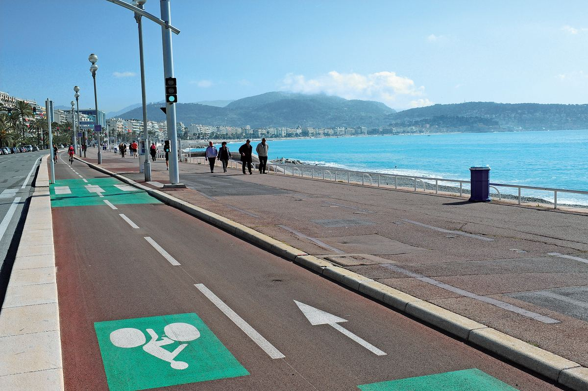
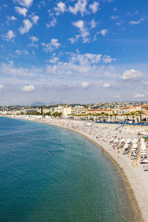

Mobilité durable à Nice : un enjeu majeur
Pollution de l’air, embouteillages, nuisances sonores. À Nice, se déplacer au quotidien est devenu un véritable défi, aussi bien pour les habitants que pour les touristes.
Face à cette situation, la municipalité souhaite accélérer le développement de transports non polluants, mieux adaptés aux usages urbains et respectueux de l’environnement.
L’objectif de ce projet est d’analyser les habitudes de déplacement des usagers, de comprendre ce qui freine l’utilisation de transports plus écologiques et d’imaginer des solutions réalistes pour améliorer la mobilité à Nice.


Contexte du projet
Ville touristique et dynamique, Nice connaît une forte pression sur ses infrastructures de transport. La voiture reste très utilisée, entraînant congestion, pollution et problèmes de stationnement.
La transition vers des modes de déplacement plus propres apparaît aujourd’hui comme une nécessité pour répondre aux enjeux environnementaux et urbains.
Objectifs du projet
- Comprendre les habitudes de déplacement actuelles.
- Identifier les principaux freins à la mobilité durable.
- Évaluer l’intérêt pour des transports non polluants.
- Proposer des solutions adaptées au contexte niçois.